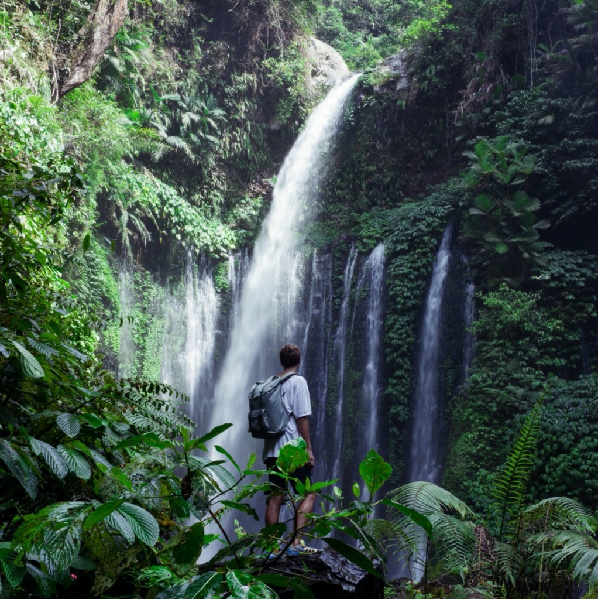

Куда я поеду
Куда я поеду сразу, как можно будет куда-то поехать

Поеду в лес
Лес — экологическая система, биоценоз, в которой
главной
жизненной формой являются
деревья.
Лес — составная часть природы, понятие
«лес» можно рассматривать
на разных
уровнях. В глобальном масштабе — это часть биосферы, в локальном — это может
быть насаждение. Леса занимают
около трети площади суши.

Поеду в горы
Горные системы занимают 64 % поверхности Азии,
36 % — Северной
Америки, 25 % —
Европы, 22 % — Южной Америки, 17 % — Австралии и 3 % —
Африки. В целом 24 % земной поверхности приходится на
горы. 10 % всех людей живёт на территории гор. В горах берёт своё начало большинство рек
Земли.

Поеду на Чёрное море
Я уплыву туда, где ни разу я не был, туда,
где никто раньше не
был. Никто и
никогда раньше не был, я уплыву. Я позову тебя смотреть на синее небо и пить
по капле синее небо, и падать в
это синее небо, я позову.
Уеду я на Чёрное-Чёрное море, на Чёрное-Чёрное
море, на
Чёрное-Чёрное море уеду я.
Уеду я на Чёрное-Чёрное море, на Чёрное-Чёрное море, на Чёрное-Чёрное море.
Уеду я.
Люди
Что говорят и говорили люди о путешествиях
-
Иван Бунин
Человека делают счастливым три вещи: любовь, интересная работа
и возможность
путешествовать.
-
Альбер Камю
Путешествие как самая великая и серьезная наука помогает
нам
вновь обрести себя.
-
Норвежская пословица
Лишь тот, кто странствует, открывает новые пути.
-
Мария Захарова
В принципе зарубежная поездка — это
серьезнейшее,
ответственнейшее и очень
рискованное предприятие.